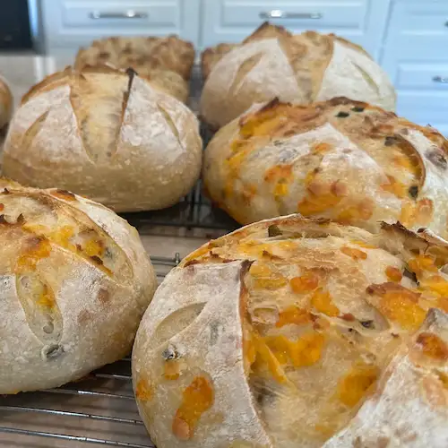

Artisan Sourdough
WHAT
This artisan sourdough is made by hand in my cottage bakery. The bread is naturally fermented and gut healthy. I use only the finest ingredients, with flour never bleached or enriched. The most common bread I make is the Classic Plain Loaf, Cheddar Jalapeno Loaf, and Italian Herb Foccacia.
WHEN
As a busy mom of almost two my availability varies from week to week. To get a monthly calendar of my bake days, please sign up for the newsletter on the Contact page.
WHERE
Currently I run the home bakery in Mesa, Arizona and only sell the bread locally. If you live in Arizona near Mesa, then I have all of your sourdough needs covered!